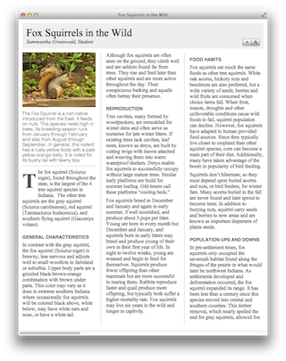
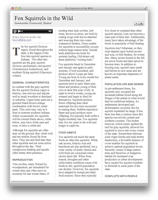
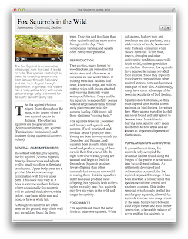
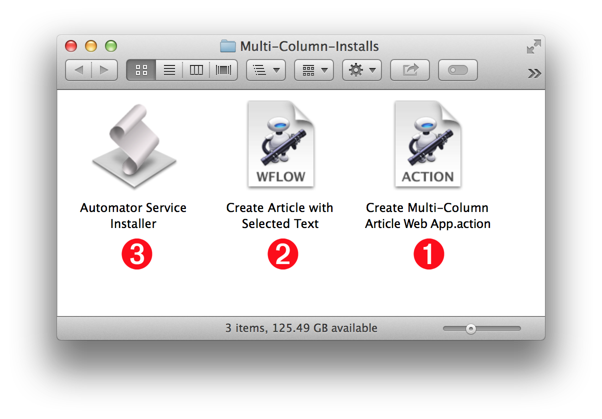
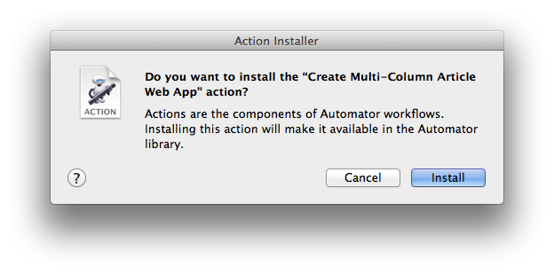
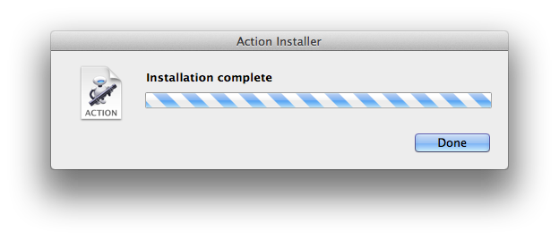
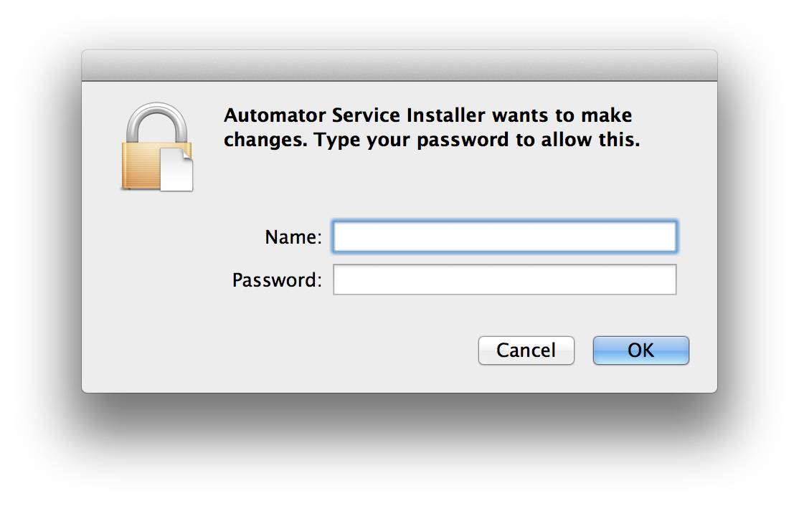
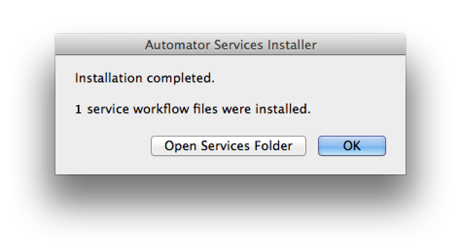

The Multi-Column Article is a webpage design widely used by online blogs and news publications. It provides an excellent format for articles, reports, or papers whose length is greater than one-thousand words. Using this page design, longer stories are presented in a compact footprint, while retaining high levels of readability and comprehension.
HTML Content-Creation Services
The automation tools provided with this tutorial, will automatically generate a folder containing multi-column HTML content, from text selected in any document or webpage.
In addition, this publication tool allows for the optional inclusion of a single piece of supporting media to be published with the source article. This media item can be an audio file, video file, or image file, that is automatically placed at the beginning of the article, after the title and byline.
Click the image thumbnails below to view variations of the same article, each with a different type of supporting media. (If you are viewing this page on an iPad, tap the links below the thumbnail images)
| IMAGE | AUDIO | VIDEO |
 |
 |
 |
| iPad tap HERE | iPad tap HERE | iPad tap HERE |
Before continuing this workshop, there are two components of the Multi-Column Article publishing tool that need to be installed on the computer:
- An Automator action. This bundle file component of the Automator automation frameworks, contains the interface and supporting code for creating multi-column HTML publications.
- An Automator service workflow. This Automator workflow contains the Multi-Column Automator action, and is displayed on the contextual menu whenever and wherever text is selected in the operating system.
Installing the two components is easy, and takes very little time and effort.
DO THIS ►Download the ZIP archive containing the Multi-Column Automator action and Automator service workflow.
The unpacked ZIP archive will create a folder titled “Multi-Column-Installs” (see below). Open this folder:

The folder contains three items:
1 An Automator action file (labeled ACTION)
2 an Automator service workflow file (labeled WFLOW)
3 an AppleScript applet for installing the Automator service workflow file 2
The first installation step is to install the Automator action file that enables the creation of Multi-Column web apps.
DO THIS ►Double-click the icon of the Automator action (ACTION) 1 to begin its installation process.
A dialog will appear, asking you to confirm the installation of the Automator action file. (see below)

DO THIS ►Confirm the installation by pressing the Install button in the dialog. (see above)
Once the installation has been confirmed, the Automator action bundle file will be moved into the Automator folder in the user Library folder. Automator actions placed in this folder are automatically displayed in the user automation library when the Automator application is launched.
A dialog confirmation of the installation will appear when the installation process has completed. (see below)

Next, you’ll install the Automator service that enables the creation of Multi-Column web apps.
DO THIS ►Double-click the icon of the Automator Service Installer applet 3 to begin the process of installing the Automator service workflow file 2 .
A security dialog will display (see below), informing you that the Automator Service Installer applet was downloaded from this website, and asking you to confirm your intention to launch the applet.
DO THIS ► Click the Open button in the security dialog to launch the Automator Service Installer applet.

The Automator Service Installer dialog will display (see below).

DO THIS ► Click the Continue button in the applet dialog (see above), and then enter an administrator name and password in the forthcoming security dialog (see below).

Once the Automator Service Installer has completed the installation of the Automator service workflows, it will display a confirmation dialog (see below).

DO THIS ► Click the OK button to confirm the completion dialog (see above).
And lastly, now that the installation of files has been completed, it’s time for a little cleanup.
DO THIS ► Close the Multi-Column-Installs folder and place it in the trash.
In the next segment, we’ll examine the interface for the Automator action that creates the HTML content.